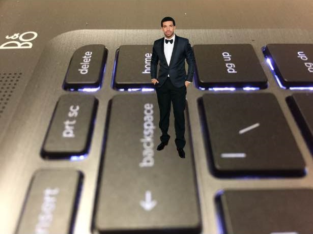

I've been shrunken down to the size of a tiny snail...
Day 1. It's me Drake. I was messing around on my computer and I must've hit the wrong button because now I've been shrunk down to the size of a tiny snail. My body is too small to press the ctrl and z keys at the same time. I don't even know how I'm typing this right now. My only hope is to make my way to the backspace key and hope it has the power to undo my terrible mistakes. Right now I'm on the 1 key on the other side of the computer. All I have is:
The backspace key is so far away, and I'm so tired from having undergone such a miraculous transformation. There's no food or water around for yards and yards. Please send help, or at least a breadcrumb, somebody.
As Drake once said, Help! I'm a tiny Drake!
Day 11. Decided to go off my route because I just couldn't pass up the chance to stand on a giant K. Yeah I know it's not giant, I'm just the size of a very small ladybug. After all the letter K is in my name. I'm Drake. Although I wonder occasionally if I ceased to be who I once was when I shrunk myself down to this ridiculous size. I can't drop hot singles so am I still Drake? This blog is called HELP It's Me, Drake but is it truly me, Drake? I need to meditate on this K to remind myself who I used to be. It's Valentine's Day. I'm so alone, I miss my girl but I would totally make out with a ladybug right now. Gonna start working on a hot new track about how much I miss my girl and want to make out with a ladybug.
Day 18. Well I've made it to the backspace key and I'm ready to backspace my mistakes. Upscale myself, get back into the up-space above. It's actually going to be kind of hard leaving my ladybug girlfriend behind. I wish I could bring her with me into the realm of human-sized things but I have no idea how to do that. I actually don't even know if I'm going to be able to get back there myself. But I can't think about that right now. I've gotta stay positive, visualize the goal. Normal-sized Drake laying down some hot tracks. I've even got a whole list of things that I'm gonna do when I get back. (I wrote them on the napkin with the crayon)
Alright, here I go. It's just like that old poem.
... burn and Drake at close of day; Drake, Drake against the dying of the light. Do not go gentle into that Drake night.